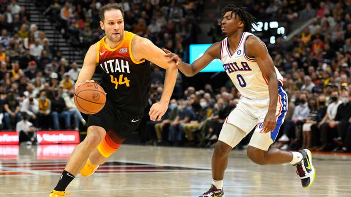

Cinco derrotas consecutivas para Philadelphia 76ers sin Joel Embiid
Philadelphia 76ers perdió por 120-85 en Utah frente al Jazz y sigue sin conocer la victoria desde que Embiid, su referencia principal en ataque y defensa, quedó fuera del equipo por positivo de COVID-19. Todavía no hay una fecha exacta para el regreso del camerunés.
Philadelphia 76ers tiene en su plantel a tres de los 25 jugadores mejores pagos de la NBA en la actualidad, pero en los últimos partidos el entrenador Doc Rivers solamente pudo disponer de uno de ellos y eso se nota en los resultados del equipo. Los Sixers volvieron a perder este martes, cayendo por 120-85 en Utah ante el Jazz, y de esta forma alcanzaron una racha negativa de cinco derrotas en fila que no sufrían desde diciembre de 2017, en la primera temporada completa de Ben Simmons y Joel Embiid.
El australiano sigue fuera del equipo por problemas de salud mental e inconvenientes con la franquicia desde que comenzó la temporada y en el principio de la Fase Regular Philadelphia se acostumbró a ganar sin él, pero el camerunés se ve marginado por COVID-19 desde el 7 de noviembre y desde entonces los Sixers no han conocido la sensación de una victoria.
Embiid no es el único jugador afectado a la enfermería que tiene Philadelphia, ya que Matisse Thybulle también tiene COVID-19 y Danny Green está fuera por una lesión muscular en la pierna izquierda, a la vez que el ya recuperado Tobias Harris también tuvo COVID-19 y otros hombres como Seth Curry se perdieron distintos partidos por molestias físicas. Pero sin duda alguna la del pivote es la baja ante la que los Sixers no encuentran forma de sobreponerse: todas las derrotas de esta racha sucedieron sin él
Joel es el corazón del equipo en ataque, promediando 21,4 puntos y 4 asistencias por partido en 30,9 minutos por juego, y también es la referencia principal de los Sixers en la defensa: por ejemplo posee el mejor rating defensivo entre los jugadores del equipo que promedian al menos 10 minutos por encuentro. La diferencia de tener a él como pivote titular o a Andre Drummond es de un tamaño inmenso por los distintos recursos con los que cuenta cada uno.
Así New York Knicks (103-96), Milwaukee Bucks (118-109), Toronto Raptors (115-109), Indiana Pacers (118-113) y ahora Utah se aprovecharon de un rival que en un principio estaba corto en la rotación y que ahora ya pudo contar con 10 jugadores pero que igualmente no levanta la cabeza sin su corazón.
Durante el primer cuarto Philadelphia compitió ante Utah, dependiendo de lo generado por Shake Milton y Tobias Harris aunque sin poder frenar la avalancha de puntos interiores del Jazz. Luego no hubo partido: Utah ganó el segundo cuarto por 33-19, el tercero por 34-19 y el último por 23-19, con Bojan Bogdanovic (27 puntos con 5-7 en triples), Jordan Clarkson (20 tantos y 7 rebotes) y Rudy Gobert (15 puntos, 17 rebotes y 4 tapones) como sus figuras.
Royce block to Bogey triple 🔥#Pura3Pointer | @Pura pic.twitter.com/YdzLxRnD7u
— Utah Jazz (@utahjazz) November 17, 2021
Del lado de Philadelphia no hay nada por rescatar en una caída por 35 puntos de diferencia: Milton con 18 puntos y Tyrese Maxey con 16 unidades fueron sus jugadores de mayor protagonismo en ataque pero los dos fueron poco efectivos, el primero errando tiros desde el drible y el segundo fallando bastante en la pintura. Los nombres experimentados hicieron menos: 12 puntos para Harris, 6 y 6 rebotes para Drummond y 5 tantos para Seth Curry.
Esta caída dejó a los Sixers en el octavo puesto del Este con récord de 8-7, a 1,5 partidos de caerse de la zona de Play-In. Antes de perder a Embiid eran líderes con ese registro de 8-2.
El entrenador Doc Rivers habló antes del partido sobre la situación de Embiid y Thybulle: "Con Matisse se trata de conseguir la fecha correcta con la liga. Hay mucho desorden dando vueltas, lo dejaré ahí. Con Joel sucede lo mismo, simplemente tratar de que mejore. Se necesitan los dos tests negativos". Ya cumplidos los 10 días del positivo de ambos, Embiid y Thybulle podrían hacer su regreso en el próximo partido de Philadelphia, el 18 de noviembre en Denver contra los Nuggets.